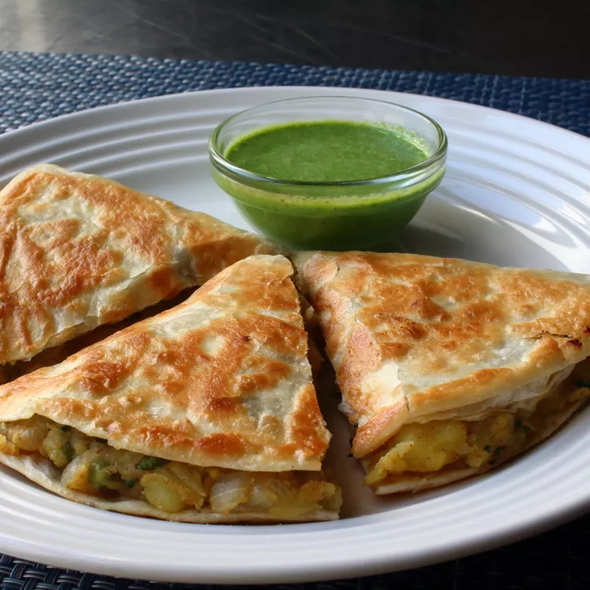

Samosadilla

Description
A samosa is a fried South Asian pastry with a savoury filling, including ingredients such as spiced potatoes, onions, peas, meat, or fish. It may take different forms, including triangular, cone, or half-moon shapes, depending on the region
While it's true a perfectly made, expertly fried, and quickly served samosa is superior to this version, that can be a very rare combination of events. By comparison, this quesadilla approach is almost impossible to mess up, and if you use enough oil in your pan, you should be able to achieve a beautifully browned, crispy crust that rivals something out of a deep fryer.
Ingredients
Below are the ingredients for making a delicious samosa, i hope they will satisfy your taste
- 1 ½ pounds Yukon gold potatoes, peeled
- kosher salt to taste
- 1 tablespoon of : olive oil,butter
- ¼ teaspoon cayenne pepper
- 1 large yellow onion, diced
- 1 ½ teaspoons of:garam masala,ground coriander,ground turmeric, finely chopped fresh ginger
- 3 cloves garlic, finely chopped
- 1 serrano pepper, minced
- 2 tablespoons chopped cilantro
Steps
- Cut potatoes into 1/4-inch cubes. Transfer into a pot of cold water. Stir in salt and bring to a boil over high heat. Simmer over medium heat until cubes are tender but still hold their shape, about 15 minutes. Drain potatoes in a colander and set aside.
- Heat olive oil and butter in a skillet over medium heat. Add onion. Cook and stir until softened and translucent, about 5 minutes. Meanwhile, combine 1 teaspoon kosher salt, garam masala, cumin, coriander, turmeric, and cayenne in a small bowl for the spice mix.
- Add serrano pepper, garlic, ginger, and the spice mix to the onions. Cook and stir until mixture is well combined, about 2 minutes. Add peas; cook until heated through and slightly tender, about 3 minutes.
- Transfer mixture into a bowl with the potatoes. Add cilantro and lemon juice. Mix with a spatula until filling is well combined, with some potatoes partially mashed. Add more salt if needed.
- Combine cilantro, mint, green onions, serrano pepper, lime juice, and yogurt in a blender. Blend until smooth. Season with salt.
- Spread a few spoonfuls of the filling over one half of 1 tortilla. Fold in half. Repeat with remaining filling and tortillas.
- Heat oil in a skillet over medium heat. Cook each quesadilla until browned and crispy, 2 to 3 minutes per side. Transfer quesadilla onto your work surface and cut in thirds. Plate and serve at any temperature, alongside the chutney sauce